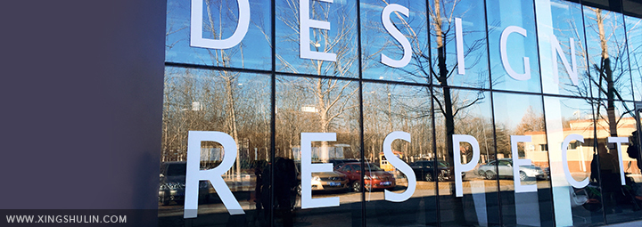

-
顺势而为,HTML发展与UI组件设计进化
行业动态 学习园地 / 2016-4-16 当运行的程序出现问题时，试我们通常通过调试来追踪和定位问题。但是，当运行错误的机器上没有调试工具 ，我们就需要实现远程调试我们通常通过调试来追踪和定位问题。但是，当运行错误的机器上没有调试工具， 我们就需要实现远程调........ 当运行的程序出现问题时，试我们通常通过调试来追踪和定位问题。但是，当运行错误的机器上没有调试工具 ，我们就需要实现远程调试我们通常通过调试来追踪和定位问题。但是，当运行错误的机器上没有调试工具， 我们就需要实现远程调........
当运行的程序出现问题时，试我们通常通过调试来追踪和定位问题。但是，当运行错误的机器上没有调试工具 ，我们就需要实现远程调试我们通常通过调试来追踪和定位问题。但是，当运行错误的机器上没有调试工具， 我们就需要实现远程调........